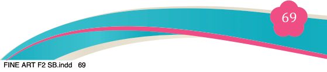
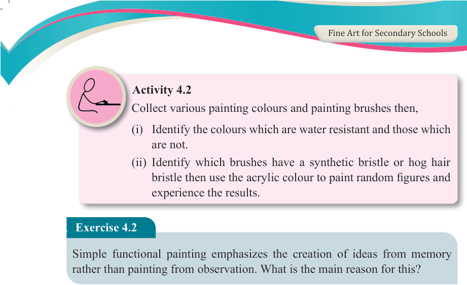
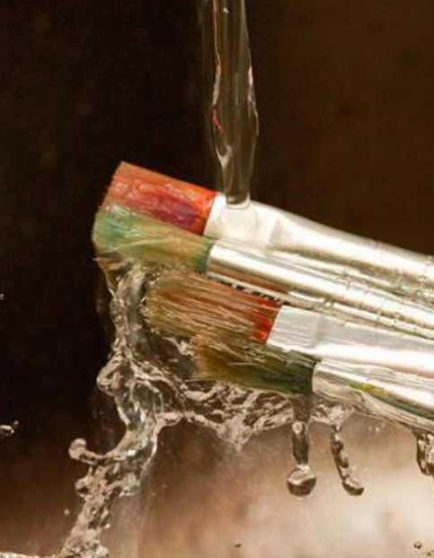

Fine Art for Secondary Schools

69

Student’s Book Form Two

Activity 4.2
Collect various painting colours and painting brushes then,
(i) Identify the colours which are water resistant and those which are not.
(ii) Identify which brushes have a synthetic bristle or hog hair bristle then use the acrylic colour to paint random figures and experience the results.
Exercise 4.2
Simple functional painting emphasizes the creation of ideas from memory rather than painting from observation. What is the main reason for this?
Caring for acrylic brushes
(i) Always clean your brush immediately after use.
(ii) Do not stand a brush on its handle as doing so will cause water to leak down into the ferrule, loosening the glue that holds the bristles together.
(iii) Never leave brushes standing on their bristles to dry to avoid losing their shapes

Figure 4.6: Bad example of acrylic painting brush handling
Source:https://www.cbsd.org/cms/lib/PA01916442/Centricity/Domain/2833/Acrylic%20
Painting%20Techniques.pdf
04/08/2025 13:54